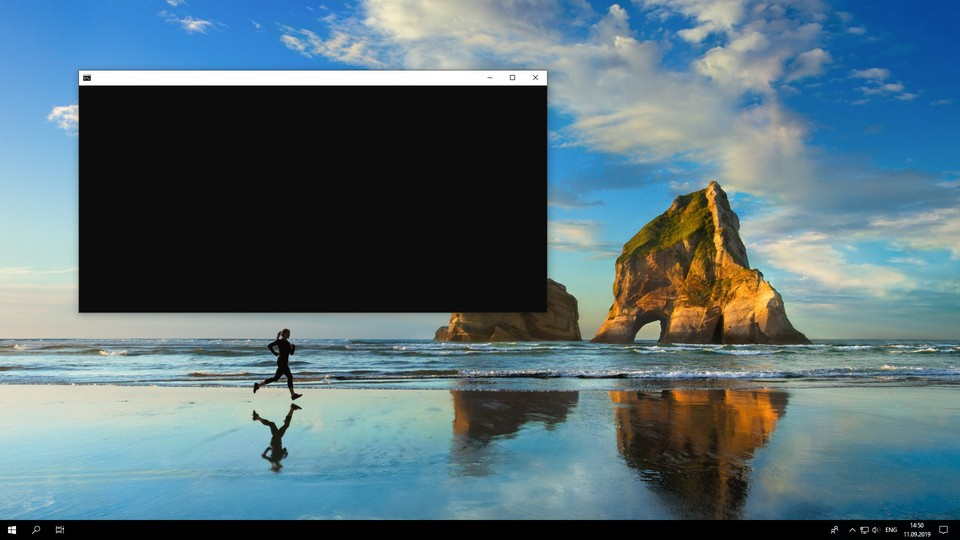

Window
Window object is used to get and set console window size and its properties.
Table of Set functions
- bool setSizeChars(int columns, int rows)
- bool setSizePixels(int width, int height)
- bool setPositionPixels(int x, int y)
- bool setFullscreenWindow()
- bool setFullscreenBorderless()
- bool setColor(Color foreground, Color background)
- bool setTitle(const std::string title)
Table of Show functions
- bool showBlinking()
- bool showSelection()
- bool showScrollbars(int columns, int rows)
- bool hideBlinking()
- bool hideSelection()
- bool hideScrollbars()
Table of Get functions
- int getX()
- int getY()
- int getWidth()
- int getHeight()
- int getRows()
- int getBarHeight()
- int getScreenWidth()
- int getScreenHeight()
Information
The difference between a console window or simply console and screen is essential.Console is an application used to run commands and executable files. Screen is the full size of working area on monitor. The position and size of console window can be changed by user or by code itself. You can use functions below to get and set these properties exactly.
The console window and screen size are different for each user. When publishing an application you should account for these different screen sizes. The easiest solution is to use Window.setFullscreenBorderless() and Cursor.setFontChars. The first function sets the console size to match the screen size and the second function adjusts cursor font to a given number of characters in columns and rows. For getting mouse position, use Mouse.getRows and Mouse.getCollumns instead of raw pixels.

Window can be used as following example.
Window.setFullscreenBorderless();
middle = Window.getColumns() / 2;
center = Window.getRows() / 2;
Functions
bool setSizeChars(int columns, int rows)
This function sets the console window size to specified number of characters. The result depends on font size.
To set the window size to fullscreen use setFullscreenWindow or setFullscreenBorderless instead.
Parameters
int - number of columns resized console will have
rows - number of rows resized console will have
Return value
Return type is bool. Return value is true if everything works, else false.
Setting size to low number of characters can throw an error, because the window
is too small to draw navigation pane. One solution is to set higher font size.
Example
This example sets screen size to only 9 chars and prints a simple frame.
Cursor.setFontPixels(30, 30);
Window.setSizeChars(9, 9);
Cursor.printChar(7, 7, 'X');
Cursor.printChar(1, 1, 'X');
Cursor.printChar(1, 7, 'X');
Cursor.printChar(7, 1, 'X');
bool setSizePixels(int width, int height)
This function sets the console window size to specified pixels. Window is automatically aligned to center. Trailing characters are shown on the next lines.
For new console information use getColumns and getRows.
To set the window size to fullscreen use setFullscreenWindow or setFullscreenBorderless instead.
Parameters
int - height of new window in pixels
int - width of new window in pixels
Return value
Return type is bool. Return value is true if everything works, else false.
Example
This example changes the window size three times and waits for user input after each one.
Window.setSizePixels(640, 480);
Keyboard.waitUser();
Window.setSizePixels(1024, 720);
Keyboard.waitUser();
Window.setSizePixels(1920, 1080);
Keyboard.waitUser();
bool setSizePixels(int width, int height)
This function sets the console window size to specified pixels. Window is automatically aligned to center. Trailing characters are shown on the next lines.
For new console information use getColumns and getRows.
To set the window size to fullscreen use setFullscreenWindow or setFullscreenBorderless instead.
Parameters
int - height of new window in pixels
int - width of new window in pixels
Return value
Return type is bool. Return value is true if everything works, else false.
Example
This example changes the window size to half the screen size.
int width = Window.getScreenWidth();
int height = Window.getScreenHeight();
Window.setSizePixels(width/2, height/2);
bool setPositionPixels(int x, int y)
This function sets the position of console window in pixels.
If you want to set window position to center you can use setPositionCenter
Parameters
int - x pixel position of window
int - y pixel position of window
Return value
Return type is bool. Return value is true if everything works, else false.
Example
This example sets the position of the window to left top third of the screen.
int xpos = Window.getScreenWidth()/3 - Window.getWidth()/2;
int ypos = Window.getScreenHeight()/3 - Window.getHeight()/2;
Window.setPositionPixels(xpos, ypos);
bool setFullscreenWindow()
This function sets the console size to maximum. This function doesn't hide borders, top navigation panel is still visible and also the bottom application pane.
If you want to fill with console to entire fullscreen, use setFullscreenBorderless
Parameters
This function doesn't have any parameters.
Return value
Return type is bool. Return value is true if everything works, else false.
Example
This example resizes the window and writes three crosses in the bottom of the console.
Window.setFullscreenWindow();
int middle = Window.getColumns() / 2 - 6;
int bottom = Window.getRows() - 1;
Cursor.setPosition(middle, bottom);
std::cout << "-x- -x- -x-";
bool setFullscreenBorderless()
This function fills the entire screen with the console size. This function hides top navigation panel and bottom application pane. This function is designed for full scale applications and games.
If you want to set the console back to window use the function again or use setFullscreenWindow.
Parameters
This function doesn't have any parameters.
Return value
Return type is bool. Return value is true if everything works, else false.
Example
This example asks the user, if they .
std::string answer;
std::cout << "Do you want to set the console to fullscreen? ";
std::cin >> answer;
if (answer == "Yes")
{
std::cout << "Console was set to fullscreen. ";
Window.setFullscreenBorderless();
}
bool setColor(Color foreground, Color background)
This function sets the default colors for console. You specify the foreground color and background color. This function will repaint whole window with all characters.
If you want to clear all text use clearScreen.
Parameters
Color any color constant, text foreground color
Color any color constant, text background color
Return value
Return type is bool. Return value is true if everything works, else false.
Example
This example sets the console colors as a preferred theme.
std::string theme = "blue";
if (theme == "blue")
{
Window.setColor(WHITE, BLUE);
}
else if (theme == "green")
{
Window.setColor(LIGHTYELLOW, GREEN);
}
std::cout << "Menu Window" << std::endl;
bool setTitle(const std::string title)
This function sets the name of the console. The text is written in console header. Function does not change the given string, meaning you can call this function without creating a string variable.
Parameters
string any string from standard library
Return value
Return type is bool. Return value is true if everything works, else false.
Example
This example sets window color and title, and writes a simple text to console.
Window.setColor(WHITE, CYAN);
Window.setTitle("RockOS");
Window.hideScrollbars();
Cursor.setFontSize(20);
std::cout << "Welcome in RockOS!" << std::endl;